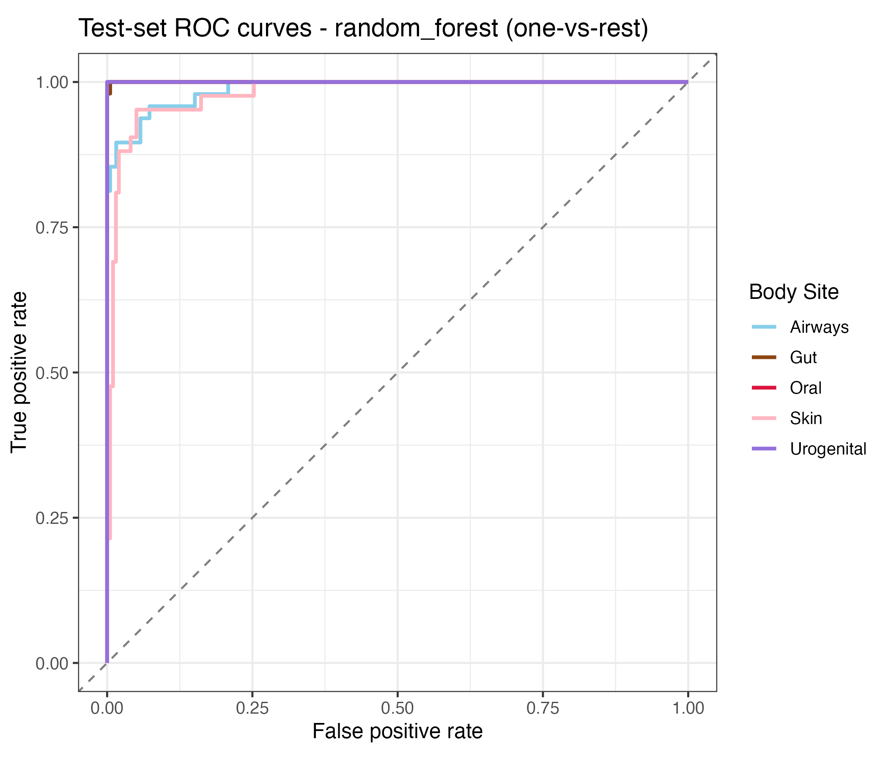
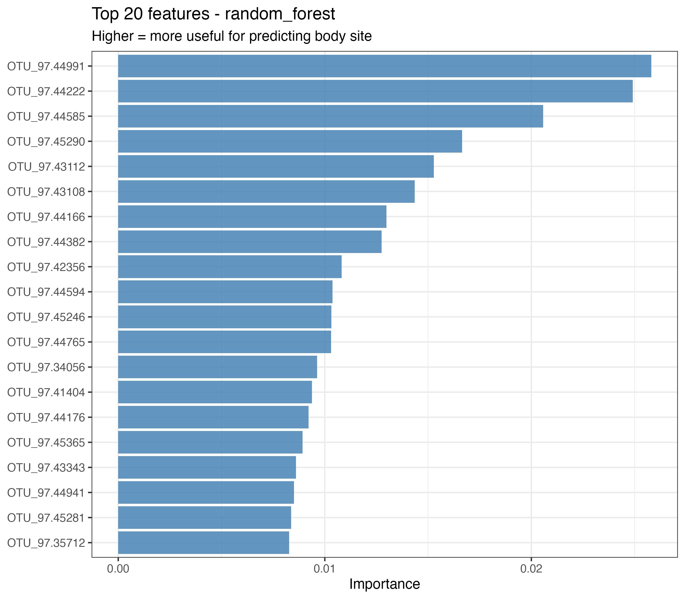

| metric | site_1 | site_2 | p_adj |
|---|---|---|---|
| Observed | Gut | Airways | 0 |
| Observed | Oral | Airways | 0 |
| Observed | Skin | Airways | 0 |
| Observed | Urogenital | Airways | 0 |
| Observed | Oral | Gut | 0 |
| Observed | Skin | Gut | 0 |
| Observed | Urogenital | Gut | 0 |
| Observed | Skin | Oral | 0 |
| Observed | Urogenital | Oral | 0 |
| Observed | Urogenital | Skin | 0 |
| Shannon | Gut | Airways | 0 |
| Shannon | Oral | Airways | 0 |
| Shannon | Skin | Airways | 0 |
| Shannon | Urogenital | Airways | 0 |
| Shannon | Oral | Gut | 0 |
| Shannon | Skin | Gut | 0 |
| Shannon | Urogenital | Gut | 0 |
| Shannon | Skin | Oral | 0 |
| Shannon | Urogenital | Oral | 0 |
| Shannon | Urogenital | Skin | 0 |
| Simpson | Gut | Airways | 0 |
| Simpson | Oral | Airways | 0 |
| Simpson | Skin | Airways | 0 |
| Simpson | Urogenital | Airways | 0 |
| Simpson | Oral | Gut | 0 |
| Simpson | Skin | Gut | 0 |
| Simpson | Urogenital | Gut | 0 |
| Simpson | Skin | Oral | 0 |
| Simpson | Urogenital | Oral | 0 |
| Simpson | Urogenital | Skin | 0 |
| Chao1 | Gut | Airways | 0 |
| Chao1 | Oral | Airways | 0 |
| Chao1 | Skin | Airways | 0 |
| Chao1 | Urogenital | Airways | 0 |
| Chao1 | Oral | Gut | 0 |
| Chao1 | Skin | Gut | 0 |
| Chao1 | Urogenital | Gut | 0 |
| Chao1 | Skin | Oral | 0 |
| Chao1 | Urogenital | Oral | 0 |
| Chao1 | Urogenital | Skin | 0 |
Supplementary Material - Comparing Microbial Diversity and Co-Occurrence Networks Across Five Major Body Sites (HMP 16S)
1 Overview
This supplement documents (a) the full set of files and the order in which they must be run to reproduce every figure and table in the main manuscript, (b) additional methodological detail, and (c) extra results that did not fit into the main text (pairwise alpha diversity comparisons, detailed network summaries).
2 Code and file information
The project has three code stages. Run them in the following order:
code/processing-code/processingfile-v1.qmd— downloads the HMP V3–V5 data withHMP16SData::V35(), removes zero-count and rare taxa, and writesdata/processed-data/ps_filt.rdsanddata/processed-data/ps_rel.rds.code/eda-code/eda.qmd— produces the exploratory figures (seq_depth.png,top_phyla.png,alpha_diversity_5sites.png,shannon_boxplot.png,pcoa_preview.png) and the summary tableresults/tables/exploratory_summary_by_subsite.rds.code/analysis-code/statistical-analysis.R— runs the formal hypothesis tests (Kruskal-Wallis, pairwise Wilcoxon, PERMANOVA, BETADISPER), builds per-site co-occurrence networks, and trains the supervised body-site classifier with cross-validation, model comparison and bootstrap-based uncertainty. Outputs include all tables (alpha_kruskal.rds,alpha_pairwise.rds,permanova.rds,network_stats.rds,ml_cv_metrics.rds,ml_test_metrics.rds,ml_test_uncertainty.rds,ml_best_params.rds,ml_confusion_matrix.rds,ml_variable_importance.rds) and figures (pcoa_ordination_5sites.png,hierarchical_clustering_5sites.png,network_statistics_comparison.png,ml_cv_comparison.png,ml_confusion_matrix.png,ml_roc_curves.png,ml_variable_importance.png).
The manuscript Quarto file products/manuscript/Manuscript.qmd and this supplement pull these results in via readRDS() and knitr::include_graphics().
3 Additional method details
3.1 Stratified subsampling
To make the comparison across the five major body sites balanced, we sample up to 200 samples per site using base R’s sample() with set.seed(123). Sites with fewer than 200 samples are included in full. This procedure gives the same set of samples on every run.
3.2 Filtering and rarefaction
Taxa are retained only if they are present in at least 10 samples and have a total count of ≥ 50 reads. Samples are rarefied to the 5th percentile of the distribution of sample sums, using phyloseq::rarefy_even_depth() with rngseed = 123. This threshold keeps 95% of samples while substantially reducing variation in sequencing depth.
3.3 Distance choice
We use Bray-Curtis as the primary distance because it is abundance-aware and is the default distance in most HMP-era papers. Jaccard (presence/ absence) is used as a robustness check. BETADISPER tests whether the PERMANOVA effect is confounded with unequal dispersion among groups; both tests are reported.
3.4 Network construction
Correlation networks are built per body site from the prevalence-filtered OTU table (≥ 10% prevalence) using Spearman correlations via Hmisc::rcorr. Edges are retained when |r| ≥ 0.5 and p < 0.01 (no multiple-testing correction is applied inside the network — this is a pragmatic threshold, not a formal significance test). Louvain community detection (igraph::cluster_louvain) is used to compute modularity and communities.
3.5 Supervised classification (H4)
The H4 pipeline showcases several data-science topics from the course in one place: model fitting and tuning, cross-validation, model comparison, regularization, ensemble methods, calibration via ROC curves, variable importance, and uncertainty quantification.
- Features. The 300 most-abundant taxa, log(1 + x)-transformed and z-scored. Constant-zero predictors are removed with
step_zv. - Resampling. A 75/25 stratified train/test split, with 5-fold cross-validation on the training set, also stratified by body site.
- Candidate models. Five workflows:
parsnip::null_model— baseline that always predicts the modal class.multinom_reg(glmnet) — elastic-net regularized multinomial logistic regression;penaltyswept on a log-grid from 1e-4 to 1 andmixtureswept from 0 (ridge) to 1 (lasso).decision_tree(rpart) — single CART;cost_complexityfrom 1e-4 to 1e-1,tree_depthfrom 3 to 15, andmin_nfrom 2 to 20.rand_forest(ranger, 500 trees,importance = "permutation") —mtryswept on {5, 35, 70, 100} andmin_non {2, 8, 14, 20}.boost_tree(xgboost) —trees{100, 800},tree_depth{3, 9},learn_rateswept on a log-grid from 1e-2 to ~3e-1, andmin_n{2, 20}. Skipped automatically whenxgboostis not installed.
- Selection. For each model we pick the hyperparameter setting that maximizes mean macro-AUC across the 5 folds, then refit on the full training set and evaluate on the held-out test set.
- Uncertainty. Test-set accuracy and macro-AUC are bootstrapped on the predictions: 1000 resamples (with replacement) of the per-row prediction tibble, and the 2.5%/97.5% quantiles serve as the 95% confidence interval.
- Variable importance. For the winning model, we extract the top-20 features by
vip::vi, which uses the engine-native importance (permutation importance for ranger, gain for xgboost, and absolute coefficient size for glmnet).
4 Additional results
4.1 Pairwise alpha diversity comparisons
Table Table 1 lists the Benjamini-Hochberg-adjusted pairwise Wilcoxon p-values for every pair of body sites, for each of the four alpha-diversity indices. These follow up the overall Kruskal-Wallis tests reported in the main text.
4.2 Full network statistics
Table Table 2 provides the full per-site network statistics (reproduced here from the main text for convenience, together with the number of positive vs. negative edges that are not shown in the main figure).
| BodySite | Nodes | Edges | Density | AvgDegree | Clustering | Modularity | Communities |
|---|---|---|---|---|---|---|---|
| Airways | 133 | 246 | 0.028 | 3.699 | 0.693 | 0.859 | 27 |
| Gut | 152 | 206 | 0.018 | 2.711 | 0.585 | 0.897 | 35 |
| Oral | 163 | 215 | 0.016 | 2.638 | 0.440 | 0.836 | 33 |
| Skin | 102 | 187 | 0.036 | 3.667 | 0.521 | 0.807 | 15 |
| Urogenital | 165 | 1411 | 0.104 | 17.103 | 0.689 | 0.672 | 6 |
4.3 Individual network visualizations
The networks themselves are saved as an igraph list in results/output/networks.rds. Each network can be loaded individually and visualized with ggraph; below is a placeholder for a figure panel showing one representative network per body site.

4.4 Cross-validation comparison and tuned hyperparameters
Table Table 3 gives the full cross-validation summary across the five candidate models, and Table Table 4 lists the hyperparameters selected by select_best(metric = "roc_auc") for each non-null model.
| .metric | mean | sd | n | model |
|---|---|---|---|---|
| accuracy | 0.208 | 0.002 | 5 | null |
| roc_auc | 0.500 | 0.000 | 5 | null |
| accuracy | 0.966 | 0.009 | 5 | multinom_glmnet |
| roc_auc | 0.996 | 0.005 | 5 | multinom_glmnet |
| accuracy | 0.876 | 0.014 | 5 | decision_tree |
| roc_auc | 0.961 | 0.011 | 5 | decision_tree |
| accuracy | 0.962 | 0.014 | 5 | random_forest |
| roc_auc | 0.996 | 0.002 | 5 | random_forest |
| model | param | value |
|---|---|---|
| multinom_glmnet | penalty | 0.268269579527972 |
| multinom_glmnet | mixture | 0 |
| decision_tree | cost_complexity | 1e-04 |
| decision_tree | tree_depth | 15 |
| decision_tree | min_n | 20 |
| random_forest | mtry | 5 |
| random_forest | min_n | 2 |
4.5 Test-set ROC curves and bootstrap uncertainty
Figure Figure 2 shows the per-class ROC curves for the winning model, and Table Table 5 reports bootstrap 95% confidence intervals on test accuracy and macro-AUC (B = 1000 resamples). The CIs are narrow on this dataset, which reflects the large held-out test sample and the strong signal in the features.

| metric | point | lower | upper | model | n_boot |
|---|---|---|---|---|---|
| accuracy | 0.958 | 0.929 | 0.979 | random_forest | 1000 |
| roc_auc | 0.993 | 0.988 | 0.997 | random_forest | 1000 |
4.6 Variable importance

5 Discussion
Results in this supplement support the three main-text conclusions: (1) the overall Kruskal-Wallis tests are not driven by a single outlier site — most pairwise contrasts are significant after BH correction; (2) PERMANOVA effects are robust to switching between Bray-Curtis and Jaccard distances; and (3) network differences across sites are not artifacts of sample size alone, because the ranking of sites by modularity and communities is consistent with the ecological structure reported in the literature (McKay et al. 2020a, 2020b).
6 References
McKay B, Ebell M, Billings WZ, Dale AP, Shen Y, Handel A. Associations Between Relative Viral Load at Diagnosis and Influenza A Symptoms and Recovery. Open forum infectious diseases. 2020 Nov a;7(11):ofaa494.
McKay B, Ebell M, Dale AP, Shen Y, Handel A. Virulence-mediated infectiousness and activity trade-offs and their impact on transmission potential of influenza patients. Proceedings Biological sciences. 2020 May b;287(1927):20200496.